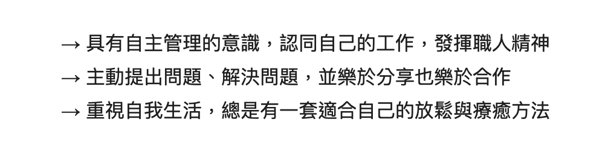

<!DOCTYPE html>
<html lang="zh">
<head>
    <meta charset="UTF-8">
    <meta http-equiv="X-UA-Compatible" content="IE=edge">
    <meta name="viewport" content="width=device-width, initial-scale=1.0">
    <title>WenYing's bootcamp application</title>
    <link rel="stylesheet" href="./style/style.css">
</head>
<body>
    <div class="animation">
        <svg width="133" height="108" viewBox="0 0 133 108" fill="none" xmlns="http://www.w3.org/2000/svg">
        <g filter="url(#filter0_d_14_26)">
        <path id="first" class="thePaths" d="M32.735 97.3956L33.0369 98.5H34.1818H45.8182H46.9592L47.2638 97.4004L66.7273 27.125L86.1908 97.4004L86.4954 98.5H87.6364H99.2728H100.418L100.72 97.3956L126.174 4.30472L126.693 2.40909H124.727H113.273H112.109L111.82 3.53627L93.3544 75.4995L74.5422 3.52975L74.2492 2.40909H73.0909H60.3637H59.2054L58.9124 3.52975L40.1002 75.4995L21.6348 3.53627L21.3455 2.40909H20.1818H8.72729H6.76207L7.28041 4.30472L32.735 97.3956Z" stroke="white" stroke-width="3" shape-rendering="crispEdges"/>
        </g>
        <defs>
        <filter id="filter0_d_14_26" x="0.796875" y="0.909088" width="131.861" height="107.091" filterUnits="userSpaceOnUse" color-interpolation-filters="sRGB">
        <feFlood flood-opacity="0" result="BackgroundImageFix"/>
        <feColorMatrix in="SourceAlpha" type="matrix" values="0 0 0 0 0 0 0 0 0 0 0 0 0 0 0 0 0 0 127 0" result="hardAlpha"/>
        <feOffset dy="4"/>
        <feGaussianBlur stdDeviation="2"/>
        <feComposite in2="hardAlpha" operator="out"/>
        <feColorMatrix type="matrix" values="0 0 0 0 0 0 0 0 0 0 0 0 0 0 0 0 0 0 0.25 0"/>
        <feBlend mode="normal" in2="BackgroundImageFix" result="effect1_dropShadow_14_26"/>
        <feBlend mode="normal" in="SourceGraphic" in2="effect1_dropShadow_14_26" result="shape"/>
        </filter>
        </defs>
        </svg>

        <svg width="72" height="108" viewBox="0 0 72 108" fill="none" xmlns="http://www.w3.org/2000/svg">
        <g filter="url(#filter0_d_15_28)">
        <path id="second" class="thePaths" d="M5.77271 97V98.5H7.27271H64.1818H65.6818V97V87V85.5H64.1818H20.0454V56.8636H60.5454H62.0454V55.3636V45.3636V43.8636H60.5454H20.0454V15.4091H63.4545H64.9545V13.9091V3.90909V2.40909H63.4545H7.27271H5.77271V3.90909V97Z" stroke="white" stroke-width="3" shape-rendering="crispEdges"/>
        </g>
        <defs>
        <filter id="filter0_d_15_28" x="0.272705" y="0.909088" width="70.9091" height="107.091" filterUnits="userSpaceOnUse" color-interpolation-filters="sRGB">
        <feFlood flood-opacity="0" result="BackgroundImageFix"/>
        <feColorMatrix in="SourceAlpha" type="matrix" values="0 0 0 0 0 0 0 0 0 0 0 0 0 0 0 0 0 0 127 0" result="hardAlpha"/>
        <feOffset dy="4"/>
        <feGaussianBlur stdDeviation="2"/>
        <feComposite in2="hardAlpha" operator="out"/>
        <feColorMatrix type="matrix" values="0 0 0 0 0 0 0 0 0 0 0 0 0 0 0 0 0 0 0.25 0"/>
        <feBlend mode="normal" in2="BackgroundImageFix" result="effect1_dropShadow_15_28"/>
        <feBlend mode="normal" in="SourceGraphic" in2="effect1_dropShadow_15_28" result="shape"/>
        </filter>
        </defs>
        </svg>
        <svg width="89" height="108" viewBox="0 0 89 108" fill="none" xmlns="http://www.w3.org/2000/svg">
        <g filter="url(#filter0_d_15_30)">
        <path id="third" class="thePaths" d="M82.5909 3.90909V2.40909H81.0909H70H68.5V3.90909V73.7025L19.4137 3.05321L18.9661 2.40909H18.1818H7.27271H5.77271V3.90909V97V98.5H7.27271H18.5454H20.0454V97V27.3913L68.9495 97.8552L69.397 98.5H70.1818H81.0909H82.5909V97V3.90909Z" stroke="white" stroke-width="3" shape-rendering="crispEdges"/>
        </g>
        <defs>
        <filter id="filter0_d_15_30" x="0.272705" y="0.909088" width="87.8182" height="107.091" filterUnits="userSpaceOnUse" color-interpolation-filters="sRGB">
        <feFlood flood-opacity="0" result="BackgroundImageFix"/>
        <feColorMatrix in="SourceAlpha" type="matrix" values="0 0 0 0 0 0 0 0 0 0 0 0 0 0 0 0 0 0 127 0" result="hardAlpha"/>
        <feOffset dy="4"/>
        <feGaussianBlur stdDeviation="2"/>
        <feComposite in2="hardAlpha" operator="out"/>
        <feColorMatrix type="matrix" values="0 0 0 0 0 0 0 0 0 0 0 0 0 0 0 0 0 0 0.25 0"/>
        <feBlend mode="normal" in2="BackgroundImageFix" result="effect1_dropShadow_15_30"/>
        <feBlend mode="normal" in="SourceGraphic" in2="effect1_dropShadow_15_30" result="shape"/>
        </filter>
        </defs>
        </svg>
        <svg width="99" height="108" style="margin-left: 2rem;" viewBox="0 0 99 108" fill="none" xmlns="http://www.w3.org/2000/svg">
        <g filter="url(#filter0_d_15_32)">
        <path id="fourth" class="thePaths" d="M10.2727 2.40909H7.59011L8.99478 4.69452L42.4091 59.0605V97V98.5H43.9091H55.1818H56.6818V97V59.0605L90.0961 4.69452L91.5008 2.40909H88.8182H75.9091H75.0555L74.6195 3.14291L49.5454 45.3451L24.4714 3.14291L24.0354 2.40909H23.1818H10.2727Z" stroke="white" stroke-width="3" shape-rendering="crispEdges"/>
        </g>
        <defs>
        <filter id="filter0_d_15_32" x="0.907471" y="0.909088" width="97.2759" height="107.091" filterUnits="userSpaceOnUse" color-interpolation-filters="sRGB">
        <feFlood flood-opacity="0" result="BackgroundImageFix"/>
        <feColorMatrix in="SourceAlpha" type="matrix" values="0 0 0 0 0 0 0 0 0 0 0 0 0 0 0 0 0 0 127 0" result="hardAlpha"/>
        <feOffset dy="4"/>
        <feGaussianBlur stdDeviation="2"/>
        <feComposite in2="hardAlpha" operator="out"/>
        <feColorMatrix type="matrix" values="0 0 0 0 0 0 0 0 0 0 0 0 0 0 0 0 0 0 0.25 0"/>
        <feBlend mode="normal" in2="BackgroundImageFix" result="effect1_dropShadow_15_32"/>
        <feBlend mode="normal" in="SourceGraphic" in2="effect1_dropShadow_15_32" result="shape"/>
        </filter>
        </defs>
        </svg>
        <svg width="26" height="108" viewBox="0 0 26 108" fill="none" xmlns="http://www.w3.org/2000/svg">
        <g filter="url(#filter0_d_15_34)">
        <path id="fifth" class="thePaths" d="M20.0454 3.90909V2.40909H18.5454H7.27271H5.77271V3.90909V97V98.5H7.27271H18.5454H20.0454V97V3.90909Z" stroke="white" stroke-width="3" shape-rendering="crispEdges"/>
        </g>
        <defs>
        <filter id="filter0_d_15_34" x="0.272705" y="0.909088" width="25.2727" height="107.091" filterUnits="userSpaceOnUse" color-interpolation-filters="sRGB">
        <feFlood flood-opacity="0" result="BackgroundImageFix"/>
        <feColorMatrix in="SourceAlpha" type="matrix" values="0 0 0 0 0 0 0 0 0 0 0 0 0 0 0 0 0 0 127 0" result="hardAlpha"/>
        <feOffset dy="4"/>
        <feGaussianBlur stdDeviation="2"/>
        <feComposite in2="hardAlpha" operator="out"/>
        <feColorMatrix type="matrix" values="0 0 0 0 0 0 0 0 0 0 0 0 0 0 0 0 0 0 0.25 0"/>
        <feBlend mode="normal" in2="BackgroundImageFix" result="effect1_dropShadow_15_34"/>
        <feBlend mode="normal" in="SourceGraphic" in2="effect1_dropShadow_15_34" result="shape"/>
        </filter>
        </defs>
        </svg>
        <svg width="89" height="108" viewBox="0 0 89 108" fill="none" xmlns="http://www.w3.org/2000/svg">
        <g filter="url(#filter0_d_15_36)">
        <path id="sixth" class="thePaths" d="M82.5909 3.90909V2.40909H81.0909H70H68.5V3.90909V73.7025L19.4137 3.05321L18.9661 2.40909H18.1818H7.27271H5.77271V3.90909V97V98.5H7.27271H18.5454H20.0454V97V27.3913L68.9495 97.8552L69.397 98.5H70.1818H81.0909H82.5909V97V3.90909Z" stroke="white" stroke-width="3" shape-rendering="crispEdges"/>
        </g>
        <defs>
        <filter id="filter0_d_15_36" x="0.272705" y="0.909088" width="87.8182" height="107.091" filterUnits="userSpaceOnUse" color-interpolation-filters="sRGB">
        <feFlood flood-opacity="0" result="BackgroundImageFix"/>
        <feColorMatrix in="SourceAlpha" type="matrix" values="0 0 0 0 0 0 0 0 0 0 0 0 0 0 0 0 0 0 127 0" result="hardAlpha"/>
        <feOffset dy="4"/>
        <feGaussianBlur stdDeviation="2"/>
        <feComposite in2="hardAlpha" operator="out"/>
        <feColorMatrix type="matrix" values="0 0 0 0 0 0 0 0 0 0 0 0 0 0 0 0 0 0 0.25 0"/>
        <feBlend mode="normal" in2="BackgroundImageFix" result="effect1_dropShadow_15_36"/>
        <feBlend mode="normal" in="SourceGraphic" in2="effect1_dropShadow_15_36" result="shape"/>
        </filter>
        </defs>
        </svg>
        <svg width="95" height="111" viewBox="0 0 95 111" fill="none" xmlns="http://www.w3.org/2000/svg">
        <g filter="url(#filter0_d_17_41)">
        <path id="seventh" class="thePaths" d="M73.4833 34.4659L73.8212 35.5H74.9091H86.5454H88.3536L88.0196 33.723C87.1401 29.0426 85.5337 24.7658 83.1927 20.9058C80.8603 17.0297 77.9406 13.6983 74.4374 10.9199C70.9628 8.10981 67.0063 5.95317 62.5804 4.44573C58.1664 2.90165 53.4236 2.13636 48.3636 2.13636C42.2044 2.13636 36.5243 3.27857 31.3446 5.58417C26.1735 7.88593 21.6944 11.1992 17.9171 15.5117C14.135 19.8296 11.2251 25.0384 9.17007 31.11L9.16861 31.1144C7.13882 37.1725 6.13635 43.9585 6.13635 51.4545C6.13635 61.4465 7.89424 70.1643 11.4675 77.5615L11.4697 77.5662C15.0668 84.948 20.0978 90.6862 26.5692 94.7269L26.572 94.7286C33.0801 98.7725 40.6036 100.773 49.0909 100.773C56.6991 100.773 63.4967 99.1807 69.4426 95.9548L69.445 95.9535C75.4152 92.6999 80.1015 88.109 83.4816 82.2033C86.9065 76.2724 88.5909 69.3384 88.5909 61.4545V51.4545V49.9545H87.0909H51.6364H50.1364V51.4545V61.4545V62.9545H51.6364H74.6187C74.3559 67.5014 73.2747 71.4629 71.4111 74.8713L71.4093 74.8746C69.2693 78.8122 66.2878 81.8482 62.4463 84.0109C58.6411 86.1399 54.2044 87.2273 49.0909 87.2273C43.5937 87.2273 38.6883 85.8713 34.3344 83.1788C30.0021 80.4996 26.5302 76.534 23.9398 71.2076C21.3679 65.9193 20.0454 59.3549 20.0454 51.4545C20.0454 43.5521 21.3535 36.9854 23.8973 31.6955C26.4609 26.3644 29.8762 22.3995 34.1185 19.7232C38.3859 17.031 43.1219 15.6818 48.3636 15.6818C51.5918 15.6818 54.5251 16.1179 57.1758 16.973C59.8359 17.8311 62.1927 19.0691 64.2587 20.6823L64.2586 20.6823L64.2665 20.6883C66.3711 22.3094 68.1819 24.2748 69.6993 26.594L69.7052 26.603L69.7113 26.6119C71.2623 28.9098 72.5222 31.5244 73.4833 34.4659Z" stroke="white" stroke-width="3" shape-rendering="crispEdges"/>
        </g>
        <defs>
        <filter id="filter0_d_17_41" x="0.636353" y="0.63636" width="93.5253" height="109.636" filterUnits="userSpaceOnUse" color-interpolation-filters="sRGB">
        <feFlood flood-opacity="0" result="BackgroundImageFix"/>
        <feColorMatrix in="SourceAlpha" type="matrix" values="0 0 0 0 0 0 0 0 0 0 0 0 0 0 0 0 0 0 127 0" result="hardAlpha"/>
        <feOffset dy="4"/>
        <feGaussianBlur stdDeviation="2"/>
        <feComposite in2="hardAlpha" operator="out"/>
        <feColorMatrix type="matrix" values="0 0 0 0 0 0 0 0 0 0 0 0 0 0 0 0 0 0 0.25 0"/>
        <feBlend mode="normal" in2="BackgroundImageFix" result="effect1_dropShadow_17_41"/>
        <feBlend mode="normal" in="SourceGraphic" in2="effect1_dropShadow_17_41" result="shape"/>
        </filter>
        </defs>
        </svg>                                        
    </div>
    <br>
    <br>
    <br>
    <br>
    <main>
        <div class="left">
            <h1>陳玟穎 Chen Wen Ying</h1>
            <hr>
            <h2>兩百字內的個人簡介</h2>
            <p>我是陳玟穎，畢業於中原大學心理學系，在科技產業擔任業務助理，主要負責與客戶接洽、追蹤案件進度、出口報關交易等，工作經驗使我在與他人溝通、團體相處更能圓融，並在遇到困境時尋求最佳解。
            <br>因為使用wordpress幫自己建立部落格，也幫公司建立網站的關係，促使我對網頁開發設計產生興趣，雖然當時的我並不會寫程式但卻獲得不少成就感，我的目標是有天能憑藉一己之力完成一個理想中具有互動功能的形象網站，以下是我目標中的網站。</p>
            <a style="color: rgb(221, 221, 47);" href="https://glory.taipei/#landing" target="_blank">目標網站：台北市形象網站</a>
            <br>
            <h2>為了成為軟體工程師，曾做過什麼努力？</h2>
            <p>在為了成為軟體工程師的學習之路，老實說我還算滿幸運的，沒有經歷過學了一大堆發現不是自己未來應該用到的程式語言。而是直接先從104上面查找如果要當前端工程師應該要具備那些技能。
            起初是使用codecademy練習，後來在hahow、Udemy上的線上課程、接觸到彭彭老師的youtube影片，甚至是W3Scool、MDN的文字教學，雖然還未能具體顯現努力的過程，但我想未來的日子，確信會全力投入訓練營，且付出努力及時間，並根據時間安排維持穩定作息，能夠一步一腳印往軟體工程師邁進。</p>
            <a class="btn"  href="https://codepen.io/collection/BNxewp" target="_blank">my codepen</a>
            <br>
            <br>
            <br>
            <h2>如果參與這個計畫，會怎麼安排學習時間？</h2>
            <p>預計參與計畫後會全職投入學習，以每天至少6~8小時的學習時間進行，同時搭配番茄鐘有效提升專注度。
                經過先前學習狀態，我發現無法直接規定自己這項技能應該要學習多少時間，或是藉由觀看學習影片來界定自己是否有達成學習目標，所以我將會採取的策略是無論需要多少時間，是否可以將課程上，或是課外所學的項目都弄清楚是最為重要的。
                並且，同時搭配Notion完成自己的學習筆記紀錄，規定自己無論學習的內容是否為基礎已知，也應該留下紀錄。</p>
                <a class="btn"  href="https://docs.google.com/spreadsheets/d/1z9tXeotIHNtJFScRyPeof3NqB3RjSLhg3SQ1WlFRK8o/edit?usp=sharing" target="_blank">學習規劃歷程</a>

            <h2>是否有想要加入的軟體公司？為什麼想加入該公司？</h2>
            <p>根據104上的資訊「Cutaway卡個位 _賽米資訊股份有限公司」，會是我理想上想加入的公司，主因除了福利制度完善之外，在工作描述的資訊有透露出公司的期望與氛圍(如圖)，能在工作表現上追求成就感也是我非常在意的部分。也由於工作經歷一直都是待在10人的小型公司，所以想要找尋較有規模且制度及福利較為完善的公司，好讓初期加入的我能夠盡快熟悉前端工程的實際工作環境，並在團隊合作的流程也能有完整的認識，並期許能是一間有相關教育訓練或者技術資源的公司。</p>
                
        </div>
        <div class="right">
            <div class="decoration"></div>
            <h2>請描述一件你曾經碰到最困難的事情，如何克服？</h2>
            <p>雖然在旁人眼裡我的情緒一直都還滿穩定的，但以前準備考研究所的時候，有突然過非常焦慮的時刻，是對未來的不確定感所導致，當時陷入低潮時期的我是利用文字書寫讓情緒平穩，盡量不給自己的情緒做負面評價，並相信終有一天會走出，這對當時的我是非常有用的。如果以現在的我來處理當時的焦慮情緒，我會對自己提問，焦慮的內容是否可控，是否可能透過充分準備來達成，就像大任務拆解為小任務逐步完成以降低焦慮感的方式進行，如果是無法自己解決的困難，會試圖求助有經驗的朋友，同時仍會持續記錄當下的感受，穩定自己的情緒。</p>
            <h2>關於這份申請網頁，請分享一個你開發時的技術心得。</h2>
            <p>因為已經是第二次申請，想要透過有別於上一次的申請，把更多想法或是先前學習到的技能、線上教學影片做過的練習放入於此。利用基本的HTML與CSS把腦海中的構想圖像切版執行出來，並利用Javascript的基本概念讓觀看本份申請網頁的人能夠有些許的動態效果。開發過程中，雖然code寫得不多，但是也是遇到了不少困難，一直無法將元素放置到理想的位置，但能發現的是將自己抽離於當下，轉個念居然就解決了，例如:原本動畫結束後的畫面，外框一直置頂移不下來，嘗試過Flexbox、position、transform等，後來突然想到以前在教學影片看過加幾個br標籤，居然就成功了。</p>
            <h2>從上次提出申請至今，多做了哪些努力？( 第一次申請不用回答 )</h2>
            <p>距離上一次的申請，中間過了兩屆，老實說這兩年的時間裡，一直不是持續進行學習的狀態，學一段空一段，而中間還有因為工作繁忙、心態問題空白了近一年，以至於時常是學後面忘前面，打掉重練的時候會懷疑自己真的有學過嗎?
                所以這次下定決心，重頭開始學習，不管是否內容再簡單，也應該要寫下自己的筆記，及心得。
                目前在Udemy上的課程已學習到javascript的觀念學習的差不多，並同步於Youtube上學習git ，逐步練習當中。</p>
            <h2>其他想要對我們說的事情？</h2>
            <p>謝謝彭彭老師持續辦著這個訓練營，讓我能再次有這個機會申請參與，這次的申請我試圖將未來的藍圖建立計畫，也透過彭彭老師規劃的各階段內容持續向前。對我而言，這個計畫像是定心丸般的存在，因為已經明確知道不是手把手的教學，而是提供方向，所以對我來說反而多了某種彈性與自由，而每週提供兩次的紀錄報告也能確保自己正在向著這個目標前進，我想應該會減少一些迷茫的時刻吧！希望有這個機會能夠加入WeHelp。</p>

        </div>
    </main>
    <script src="./app.js"></script>
</body>
</html>